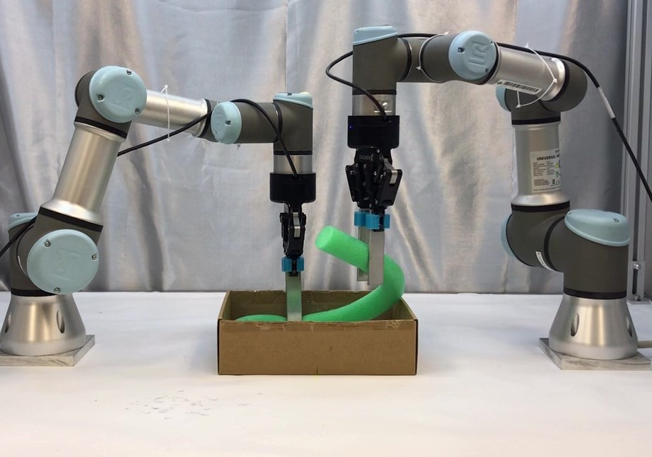
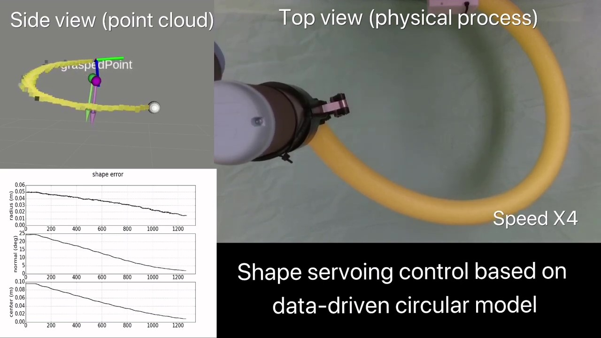

MA Wanyu （马婉玉）
I am a Postdoctoral Fellow with the Department of Surgery, The Chinese University of Hong Kong.
I obtained my Ph.D. from The Polytechnic University of Hong Kong, supervised by Dr. David Navarro-Alarcon.
My research interests include robot manipulation, human-robot interaction, machine intellegence, multimodal perception.
wyma@surgery.cuhk.edu.hk
Highlighted Research

Action Planning for Packing Long Linear Elastic Objects into Compact Boxes with Bimanual Robotic Manipulation
W. Ma, B. Zhang, L. Han, S. Huo, H. Wang, and D. Navarro-Alarcon
IEEE/ASME Transactions on Mechatronics (T-MECH), 2022
[Link] /
[Demo]

Shape Control of Elastic Objects based on Implicit Sensorimotor Models and Data-driven Geometric Features
W. Ma, J. Zhu, and D. Navarro-Alarcon
International Conference on Intelligent Autonomous Systems (IAS), 2021
[Link] /
[Demo]